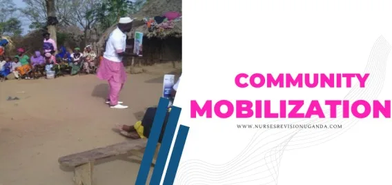

Expanded Nursing Uganda Explanation
Community Mobilization should be understood beyond a short definition. Link the concept to patient history, focused assessment, common risks, nursing priorities, documentation and evaluation of outcomes.
01 **Community Mobilization**
Community mobilization is a process that involves bringing individuals and groups together with a common purpose to plan, implement, and evaluate activities in a participatory and sustained manner.
This follows Community Diagnosis
02 **Importance of effective community mobilization**
- Encourages local ownership : Community mobilization empowers community members to take ownership of initiatives and solutions, leading to a sense of pride, responsibility, and accountability for the outcomes.
- Promotes sustainability of health programs : When communities actively participate in the planning, implementation, and evaluation of health programs, it increases the likelihood of sustainability beyond the initial phase. Communities are more likely to continue and support initiatives that they have been actively involved in.
- Motivates and involves community members : Community mobilization fosters motivation and active participation among community members. It creates a sense of belonging, purpose, and shared responsibility, leading to increased engagement in health-related activities.
- Builds community capacity: Through community mobilization, communities can develop their capacity to identify and address their own needs. It promotes knowledge sharing, skill development, and the utilization of local resources and expertise.
- Promotes sustainability and commitment : Effective community mobilization cultivates a long-term commitment to community change. It fosters a culture of collaboration, innovation, and continuous improvement, ensuring that positive changes are sustained over time.
- Advocacy for policy changes : Mobilized communities are more likely to advocate for policy changes to address their health needs. They can effectively engage with policymakers, raise awareness about key issues, and influence decisions that have a broader impact on the community’s well-being.
- Fosters unity and teamwork: Community mobilization brings people together, creating unity and fostering teamwork. It strengthens social togetherness, collaboration, and collective action towards common goals.
- Knowledge exchange : Through community mobilization, individuals have the opportunity to learn from each other, share experiences, and benefit from collective wisdom. This facilitates the adoption of best practices and innovative solutions.
- Increases effectiveness and efficiency: Mobilized communities are more effective and efficient in implementing interventions. They can identify and prioritize needs, allocate resources appropriately, and make informed decisions based on community-specific needs.
- Resource optimization : Community mobilization contributes additional resources to the response by leveraging community assets and networks. It maximizes the utilization of available resources, such as time, funds, skills, and expertise.
- Conflict resolution : Community mobilization facilitates the resolution of misunderstandings and conflicts through open dialogue, negotiation, and consensus-building. It promotes peaceful coexistence and cooperation among community members.
- Assessing community problems : Effective community mobilization enables a comprehensive assessment of community problems. It facilitates the identification of health issues, underlying causes, and potential solutions based on community needs and priorities.
03 **The Role of a Community Nurse in Community Mobilization**
- Developing an ongoing dialogue between community members : The community nurse facilitates open and continuous communication among community members, encouraging dialogue, active participation, and the sharing of ideas and concerns.
- Creating or strengthening community organizations : The nurse helps establish and strengthen community organizations, such as committees or community health groups, to provide a platform for community members to collaborate, plan, and implement health initiatives.
- Creating an empowering environment : The nurse fosters an environment that empowers individuals and communities to take charge of their health needs. This includes promoting self-efficacy, self-advocacy, and community-driven decision-making processes.
- Promoting community members’ participation: The nurse encourages community members to actively participate in health-related activities, such as community meetings, health campaigns, and awareness programs. This may involve conducting outreach efforts to engage community members and ensuring their voices are heard.
- Working in partnership with community members : The nurse collaborates with community members as equal partners in the planning, implementation, and evaluation of health initiatives. This includes respecting and valuing community members’ perspectives, knowledge, and expertise.
- Identifying and supporting the creative potential of communities : The nurse recognizes and supports the diverse skills, resources, and ideas within the community. They facilitate the exploration of various strategies and approaches that align with the community’s unique strengths and aspirations.
- Assisting in linking communities with external resources : The nurse acts as a bridge between the community and external resources, such as healthcare organizations, government agencies, and non-governmental organizations. They help community members access necessary support, services, and expertise.
- Committing enough time to work with communities : The nurse dedicates sufficient time and effort to engage with communities effectively. This involves building relationships, gaining trust, and investing in sustained partnerships to ensure meaningful community mobilization efforts.
04 **Steps taken during community mobilization**
Pre-entry phase (Preparing to mobilize)
✔ Select the mobilization team members and plan for other resources needed for mobilization.
✔ Before making initial contact with selected communities, it is recommended to gather all the information available on this community beforehand. This is done through review of existing information about the community includes
- Geographical location and cover
- Population density and distribution
- Ethnicity (tribe, religion e.t.c)
- Socio-economic activities
- Political and social organization of the community
- Ongoing projects
- Gender Relations/Role,
- Health and Health systems,
- Local Resources
Initial community contact phase
✔ One of the highest priorities for community mobilization is building strong relationships with members of each community. These relationships should be built on trust and respect, which starts with the very first meeting in the community.
✔ During this phase, hold meetings the focal persons and other leaders like;
- Local council team
- Community leaders (who act as gatekeepers)
- Extension workers and CBOs
Note ;
- Ensure to follow the protocol and meet all leaders both formal and informal.
- It is important to approach the community through their gate keepers ‘i.e. the community leaders. ****
Problem identification phase (How do you identify community problems)
✔ In order to identify the problems of the community, we need to perform a community assessment and community diagnosis
✔ This can be done using different approaches or methods which include the following
- Document out surveys – field survey “the eyeball test”
- Meet and discuss with individuals, specific groups and the community as a whole, ‘” Carry out informal interviews and discussions with the community leaders
- Observations – use of sensory data
- Informal conversations
- Brainstorming during meetings
Note : There is no standardized tool or approach to assessment of community problem identification
- Organize meetings with various levels/ groups of people to create awareness and then gain support. Organize meetings with actual community people for continuous awareness
- Give feedback about the problems identified. It is very crucial to involve the community and suggest their solutions.
Prioritizing health problems
✔ This is done through creating awareness of the problem and sensitizing the community to solve the problem by themselves.
Prioritizing refers to putting health problems in order of their importance. Guide the community to prioritize these identified problems.
The factors that you should consider in prioritizing are:
- The magnitude of the problem: e.g. how many cases are occurring over what period of time?
- The severity of the problem: how high is the risk of serious illness, disability or death?
- The feasibility of addressing the problem: are the prevention and control measures effective, available and affordable by the community?
- The level of concern of the community and the government about the problem.
- Community members preferences
- Members of individuals in the community who are or could be affected by health problems.
- Availability of potential solutions to the problems.
In specifying priority health needs in the community, the health workers should not fall into a danger of dictating to the people or community what their problems are and which priorities to be specified.
Health problems which have a high magnitude and severity, which can be easily solved, and are major concerns of the community and the government, are given the highest priority.
I nterventional Planning
✔ Identify resourceful persons and other resources needed to solve the problem i.e. identify with the community the necessary resources like natural resources, manpower and money.
✔ Interventions may be focused on any of the three levels of prevention.
- PRIMARY PREVENTION: Consists of health promotion and activities directed at providing a specific protection for illness e.g. immunization.
- SECONDARY PREVENTION: It involves early Diagnosis with prompt TX to force the duration and severity of disease e.g. breast examination for lumps, blood slides etc.
- TERTIARY PREVENTION: Carried out when irreversible disability or damage has occurred; Rehabilitation and Restoration of optimal levels of functioning is the goal of 3 o prevention.
✔ Consider the following questions
- What to do?
- What methods to use (how to do it)
- Who will do what?
- When to do it?
✔ Validate the practically of the planned interaction according to the available personal, aggregate and sub-system resources.
✔ Plan the scheduling of interactions with the community and maximize participation.
✔ Involve the community in planning right from the beginning to the end
Implementation (action phase)
✔ Tackle the problems in order of their priorities.
- Involve community members to actively participate in implementation- this will depend on the work plan e.g. training, resource mobilization, and carrying out other activities.
- You need to be available to help the community with continuous mobilization to run the program.
S ustainability Phase
✔Ensure that a program once initiated will continue in the absence of external or outside support This is sustainability and can be done by;
- Setting up committees to oversee the program implementation and continuity.
- Encouraging regular meetings
- Encouraging the spirit of volunteerism
Participatory evaluation
- Get the community and local leaders involved in evaluation i.e. what is done, what is left undone, when and how it will be accomplished.
Re-planning
- This is done based on the results of evaluation and using the learnt lessons. It is aimed at improving the output of the planned and implemented project.
05 **Methods of community mobilization**
- Mass media : Advantages: Quick dissemination of messages and responses.
- Disadvantages: Expensive, limited coverage, potential language barriers.
- Letter Writing : Advantages: Provides first-hand information, travels fast, can be kept for reference.
- Disadvantages: Poor handwriting can affect readability, exclusion of visually impaired individuals, potential language barriers.
- Telephones : Advantages: Quick communication, first-hand information, room for feedback.
- Disadvantages: Network problems, expensive to manage, potential health concerns, may discriminate against those with limited access to phones.
- Drumming, Whistles, and Horns : Advantages: Affordable, information travels quickly, culturally acceptable, non-discriminatory.
- Disadvantages: May not be loud enough for larger communities, requires drumming skills, exclusion of hearing-impaired individuals.
- Posters : Advantages: Messages can travel quickly if well-placed, acts as a reminder when left in place.
- Disadvantages: Easily removed or damaged, understanding limited to literate individuals, exclusion of visually impaired individuals, potential language barriers, expensive to produce.
- Announcements : Advantages: Quick dissemination of information, easy sensitization of the community.
- Disadvantages: Language barriers, can be expensive, may not reach everyone, timing may not be optimal.
- Home Visiting : Advantages: Provides first-hand information, affordable.
- Disadvantages: Tiresome and time-consuming, potential language barriers.
- Music, Dance, and Drama: Advantages: Attractive and engaging, non-discriminatory, effective in sensitizing people, fast message delivery.
- Disadvantages: Language barriers, can be expensive, potential distortion of the message by the audience, prone to misinterpretation, requires prior preparations.
06 **Opportunities for community mobilization**
- Church Gatherings : Church services and gatherings provide a platform to reach a large number of community members.
- Funerals : Funerals are occasions where community members come together, providing an opportunity for mobilization and sharing of information.
- Political Rallies : Political rallies attract community members and can be utilized to raise awareness and engage the public in community initiatives.
- Markets : Markets are bustling community hubs where people gather, presenting an opportunity to disseminate information and engage with community members.
- Club Meetings: Community clubs and organizations offer a platform for mobilization, fostering community engagement and collaboration.
- Social Gatherings : Events such as weddings, cultural festivals, and community celebrations can be leveraged to mobilize the community and promote health initiatives.
Special considerations for community mobilization include:
- Timing : Consider the seasonal variations and the timing of community activities to ensure maximum participation. Give sufficient notice for events and activities.
- Capacity : Assess the community’s capacity for effective planning, communication, and delegation of duties and responsibilities. Provide support and training if needed.
- Punctuality : Emphasize the importance of being timely in carrying out activities to maintain community engagement and trust.
Factors that promote community mobilization include:
- Good Leadership : Strong leadership plays a crucial role in motivating and mobilizing the community towards a common goal.
- Community Interests : Aligning mobilization efforts with the interests and needs of the community enhances participation and engagement.
- Motivation : Creating a sense of motivation and urgency within the community to address health issues encourages active involvement.
- Functional Community Organizations : Existing community structures and organizations can facilitate mobilization efforts by providing a framework for coordination and collaboration.
- Good Transport System and Roads : Accessible transportation infrastructure enables community members to participate in mobilization activities.
- Appropriate Communication : Using language and communication methods that are easily understandable by the community helps in effective mobilization.
- Stable Seasonality : Considering the seasonal variations in the community and planning activities during stable periods can enhance participation and engagement.
07 Factors that hinder community mobilization.
- Unfunctional Community Organization : When community organizations or structures are not well-established or lack active participation, it can hinder effective mobilization efforts.
- Past Bad Experiences : Negative experiences or failures in previous mobilization attempts may create reluctance or resistance within the community.
- Corruption by Leaders : Corrupt leaders or authorities can undermine trust and hinder community mobilization efforts.
- Poor Approach to the Community: Inadequate understanding of the community’s needs, culture, and values can result in ineffective approaches that fail to resonate with community members.
- Difficult Communities : Some communities may present unique challenges, such as high levels of poverty, social unrest, or cultural barriers, which can derail mobilization efforts.
- Insecurity : Communities facing security threats or instability may be hesitant to engage in mobilization activities due to safety concerns.
- Diversity of Community Interests : Competing interests within the community can divert attention and resources away from mobilization efforts.
- Poor Planning : Inadequate planning, including overlapping community activities or lack of coordination, can hinder the success of mobilization initiatives.
- Tribal/Religious Conflicts : Intertribal or religious tensions can create divisions and hinder community collaboration.
- Rumors and Misconceptions : Spread of rumors, misinformation, or misconceptions about the mobilization activities can undermine trust and participation.
Problems anticipated or commonly encountered during community mobilization.
- Lack of Supportive Leaders: Resistance or lack of support from community leaders can hinder the success of mobilization programs.
- Negative Attitude of the Community: Community members may exhibit skepticism or resistance towards the proposed program or activity, affecting their participation.
- Community Division : Internal divisions or conflicts within the community can impede cooperation and hinder mobilization efforts.
- Punctuality Issues : Challenges in maintaining punctuality and ensuring attendance at meetings or activities can disrupt the mobilization process.
- Political/Religious Differences : Political or religious affiliations and differences can create barriers to community unity and collaboration.
- Transportation Challenges : Lack of accessible transportation, particularly in remote or difficult-to-reach locations, can limit community members’ participation.
- Lack of Trust: Community members may have concerns about the credibility or intentions of service providers, leading to a lack of trust and reluctance to engage.
- High Expectations : Communities may have high expectations for the outcomes or benefits of the mobilization program, which can pose challenges in meeting those expectations.
08 Nursing Uganda Clinical Lens
Use Community Mobilization as a practical nursing topic, not only a memorized definition. Move from individual illness to prevention, population risk, health education and continuity of care.
- What to understand first: define community mobilization, identify the normal or expected pattern, then explain what changes when the patient is unwell.
- Why it matters in care: the nurse must recognize risk early, explain findings clearly, document accurately and know when to escalate.
- How to revise it: connect each point to assessment, nursing diagnosis or care problem, intervention, rationale and evaluation.
09 Assessment Guide
- Who is affected, where they live, risk factors, resources and barriers to care.
- Environmental hygiene, nutrition, immunization, water, sanitation and health-seeking behaviour.
- Community beliefs, leaders, household practices and surveillance data.
10 Nursing Priorities, Rationales and Outcomes
- Promote prevention, early detection, referral and community participation.
- Use clear health education matched to literacy, culture and available resources.
- Document findings and coordinate with community health structures.
The rationale for these priorities is patient safety: nursing actions should prevent deterioration, reduce discomfort, support recovery and create clear evidence for the next caregiver.
- Expected outcome: The community understands the message, risk is reduced and follow-up or referral pathways are active.
11 Patient Teaching and Revision Check
- Explain community mobilization in simple language the patient or caregiver can repeat back.
- Teach warning signs, medicine or follow-up instructions, hygiene or lifestyle points where relevant.
- For exams, prepare a short answer using: definition, causes or risk factors, signs, assessment, management, complications and prevention.
- For ward practice, document baseline findings, actions taken, patient response and the plan for review.
Illustrations and Diagrams (10)



2 more diagrams available, open the lesson for full illustrations.
Related Video Lectures
Watch nursing lecture videos on YouTube for this topic. Opens in a new tab.
Watch on YouTubeExternal link: YouTube may use its own cookies and terms. Nursing Uganda is not affiliated with YouTube.